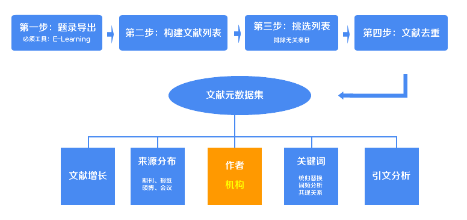
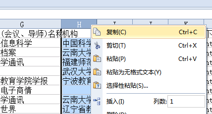
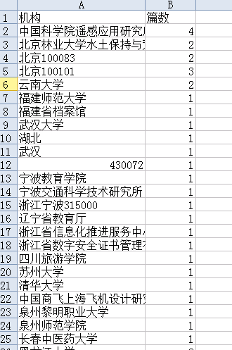

文献发文机构统计工具

在上一步中，你已经获得了Excel格式的文献元数据集，现在我们利用元数据集中的机构，对文献发文机构做统计，统计出文献来自哪些机构，并且每一个机构都有多少篇文章，并且利用Excel制作统计图。
打开上述的Excel文件，全选“机构”那一列，复制（如图）。

复制好了吗？把复制好的内容直接黏贴到下面的文本框中。
和之前你做的一样，你将得到一个经过统计好的txt文档（documents_meta_data_jigou.txt），直接复制txt文档中的内容到一个excel中，利用Excel来实现数据的图形化。
文献中常常出现机构不统一的情况，有的填写简称，有的只填写学校所在系，因此，凡是大学（学院）的只把该大学（学院）作为作者机构，凡是局的把该局作为机构，凡是馆的把该馆作为机构，其他则保留。很明显，机构统计存在不准确的情况，建议你经过统计后再结合人工审核进一步获得准确数据。如下图中，你就会发现经过统计后一些奇怪的机构也出现在了统计结果中，这是由于杂志社或作者在填写机构字段的时候与我们的工具不符导致的，因此我们要对这些奇怪的机构进行重查。

经过重查和确认后，你可以轻松的利用excel做排序和图形化处理。